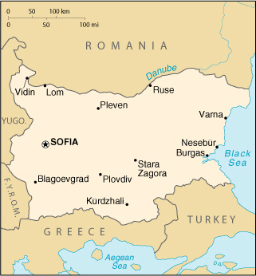

|
Bulgaria | |
| Introduction Geography People Government Economy Communications Transportation Military Transnational Issues | ||
|  | ||
| Bulgaria | Introduction | Top of Page |
| Background: | Bulgaria earned its independence from the Ottoman Empire in 1878, but having fought on the losing side in both World Wars, it fell within the Soviet sphere of influence and became a People's Republic in 1946. Communist domination ended in 1990, when Bulgaria held its first multi-party election since World War II and began the contentious process of moving toward political democracy and a market economy while combating inflation, unemployment, corruption, and crime. Today, reforms and democratization keep Bulgaria on a path toward eventual integration into NATO and the EU - with which it began accession negotiations in 2000. |
| Bulgaria | Geography | Top of Page |
| Location: | Southeastern Europe, bordering the Black Sea, between Romania and Turkey |
| Geographic coordinates: | 43 00 N, 25 00 E |
| Map references: | Europe |
| Area: |
total:
110,910 sq km
land: 110,550 sq km water: 360 sq km |
| Area - comparative: | slightly larger than Tennessee |
| Land boundaries: |
total:
1,808 km
border countries: Greece 494 km, The Former Yugoslav Republic of Macedonia 148 km, Romania 608 km, Yugoslavia 318 km, Turkey 240 km |
| Coastline: | 354 km |
| Maritime claims: |
contiguous zone:
24 NM
exclusive economic zone: 200 NM territorial sea: 12 NM |
| Climate: | temperate; cold, damp winters; hot, dry summers |
| Terrain: | mostly mountains with lowlands in north and southeast |
| Elevation extremes: |
lowest point:
Black Sea 0 m
highest point: Musala 2,925 m |
| Natural resources: | bauxite, copper, lead, zinc, coal, timber, arable land |
| Land use: |
arable land:
43%
permanent crops: 2% permanent pastures: 14% forests and woodland: 38% other: 3% (1999 est.) |
| Irrigated land: | 12,370 sq km (1993 est.) |
| Natural hazards: | earthquakes, landslides |
| Environment - current issues: | air pollution from industrial emissions; rivers polluted from raw sewage, heavy metals, detergents; deforestation; forest damage from air pollution and resulting acid rain; soil contamination from heavy metals from metallurgical plants and industrial wastes |
| Environment - international agreements: |
party to:
Air Pollution, Air Pollution-Nitrogen Oxides, Air Pollution-Sulphur 85, Air Pollution-Volatile Organic Compounds, Antarctic-Environmental Protocol, Antarctic-Marine Living Resources, Antarctic Treaty, Biodiversity, Climate Change, Endangered Species, Environmental Modification, Hazardous Wastes, Law of the Sea, Nuclear Test Ban, Ozone Layer Protection, Ship Pollution, Wetlands
signed, but not ratified: Air Pollution-Persistent Organic Pollutants, Air Pollution-Sulphur 94, Climate Change-Kyoto Protocol |
| Geography - note: | strategic location near Turkish Straits; controls key land routes from Europe to Middle East and Asia |
| Bulgaria | People | Top of Page |
| Population: | 7,707,495 (July 2001 est.) |
| Age structure: |
0-14 years:
15.11% (male 597,765; female 567,030)
15-64 years: 68.17% (male 2,588,805; female 2,665,736) 65 years and over: 16.72% (male 543,665; female 744,494) (2001 est.) |
| Population growth rate: | -1.14% (2001 est.) |
| Birth rate: | 8.06 births/1,000 population (2001 est.) |
| Death rate: | 14.53 deaths/1,000 population (2001 est.) |
| Net migration rate: | -4.9 migrant(s)/1,000 population (2001 est.) |
| Sex ratio: |
at birth:
1.06 male(s)/female
under 15 years: 1.05 male(s)/female 15-64 years: 0.97 male(s)/female 65 years and over: 0.73 male(s)/female total population: 0.94 male(s)/female (2001 est.) |
| Infant mortality rate: | 14.65 deaths/1,000 live births (2001 est.) |
| Life expectancy at birth: |
total population:
71.2 years
male: 67.72 years female: 74.89 years (2001 est.) |
| Total fertility rate: | 1.13 children born/woman (2001 est.) |
| HIV/AIDS - adult prevalence rate: | 0.01% (1999 est.) |
| HIV/AIDS - people living with HIV/AIDS: | NA |
| HIV/AIDS - deaths: | less than 100 (1999 est.) |
| Nationality: |
noun:
Bulgarian(s)
adjective: Bulgarian |
| Ethnic groups: | Bulgarian 83%, Turk 8.5%, Roma 2.6%, Macedonian, Armenian, Tatar, Gagauz, Circassian, others (1998) |
| Religions: | Bulgarian Orthodox 83.5%, Muslim 13%, Roman Catholic 1.5%, Uniate Catholic 0.2%, Jewish 0.8%, Protestant, Gregorian-Armenian, and other 1% (1998) |
| Languages: | Bulgarian, secondary languages closely correspond to ethnic breakdown |
| Literacy: |
definition:
age 15 and over can read and write
total population: 98% male: 99% female: 98% (1999) |
| Bulgaria | Government | Top of Page |
| Country name: |
conventional long form:
Republic of Bulgaria
conventional short form: Bulgaria |
| Government type: | parliamentary democracy |
| Capital: | Sofia |
| Administrative divisions: | 28 provinces (oblasti, singular - oblast); Blagoevgrad, Burgas, Dobrich, Gabrovo, Khaskovo, Kurdzhali, Kyustendil, Lovech, Montana, Pazardzhik, Pernik, Pleven, Plovdiv, Razgrad, Ruse, Shumen, Silistra, Sliven, Smolyan, Sofiya, Sofiya-Grad, Stara Zagora, Turgovishte, Varna, Veliko Turnovo, Vidin, Vratsa, Yambol |
| Independence: | 3 March 1878 (from Ottoman Empire) |
| National holiday: | Liberation Day, 3 March (1878) |
| Constitution: | adopted 12 July 1991 |
| Legal system: | civil law and criminal law based on Roman law; accepts compulsory ICJ jurisdiction |
| Suffrage: | 18 years of age; universal |
| Executive branch: |
chief of state:
President Petar STOYANOV (since 22 January 1997); Vice President Todor KAVALDZHIEV (since 22 January 1997)
head of government: Chairman of the Council of Ministers (Prime Minister) Ivan KOSTOV (since 19 May 1997); Deputy Prime Minister Petur ZHOTEV (since 21 December 1999) cabinet: Council of Ministers elected by the National Assembly elections: president and vice president elected on the same ticket by popular vote for five-year terms; election last held 27 October and 3 November 1996 (next to be held NA 2001); chairman of the Council of Ministers (prime minister) nominated by the president; deputy prime ministers nominated by the prime minister election results: Petar STOYANOV elected president; percent of vote - Petar STOYANOV 59.73% |
| Legislative branch: |
unicameral National Assembly or Narodno Sobranie (240 seats; members elected by popular vote to serve four-year terms)
elections: last held 17 June 2001 (next to be held NA June 2005) election results: percent of vote by party - NA%; seats by party - National Movement for Simeon II 120, UDF 51, BSP 48, DPS 21 |
| Judicial branch: | Supreme Administrative Court; Supreme Court of Cassation; Constitutional Court (12 justices appointed or elected for nine-year terms); Supreme Judicial Council (consists of the chairmen of the two Supreme Courts, the Chief Prosecutor, and 22 other members; responsible for appointing the justices, prosecutors, and investigating magistrates in the justice system; members of the Supreme Judicial Council elected for five-year terms, 11 elected by the National Assembly and 11 by bodies of the judiciary) |
| Political parties and leaders: | Alliance for National Salvation or ANS (coalition led mainly by Movement for Rights and Freedoms or MRF) [Ahmed DOGAN]; Bulgarian Business Bloc or BBB [Georgi GANCHEV]; Bulgarian Socialist Party or BSP [Georgi PURVANOV, chairman]; Democratic Left or DL (bloc led by BSP, includes Ecoglasnost Political Club and Bulgarian Agrarian National Union) [leader NA]; Euro-left [Aleksandur TOMOV]; Internal Macedonian Revolutionary Organization or UMRO [Aleksander KARAKACHNOV]; Kingdom of Bulgaria Federation [leader NA]; Movement for Rights and Freedom or DPS [Ahmed DOGAN]; National Movement for Simeon II [Simeon II, former king]; New Civic Party for Bulgaria [Bogomil BONEV]; People's Union or PU (includes Bulgarian Agrarian People's Union and Democratic Party) [Anastasiya MOZER]; St. George's Day [Lyuben DILOV]; Union of Democratic Forces or UDF (an alliance of pro-democratic parties) [Ivan KOSTOV] |
| Political pressure groups and leaders: | agrarian movement; Bulgarian Democratic Center; Confederation of Independent Trade Unions of Bulgaria or CITUB; Democratic Alliance for the Republic or DAR; New Union for Democracy or NUD; Podkrepa Labor Confederation; numerous regional, ethnic, and national interest groups with various agendas |
| International organization participation: | ACCT, BIS, BSEC, CCC, CE, CEI, CERN, EAPC, EBRD, ECE, EU (applicant), FAO, G- 9, IAEA, IBRD, ICAO, ICFTU, ICRM, IFC, IFRCS, IHO (pending member), ILO, IMF, IMO, Inmarsat, Intelsat, Interpol, IOC, IOM, ISO, ITU, NAM (guest), NSG, OAS (observer), OPCW, OSCE, PCA, PFP, UN, UNCTAD, UNESCO, UNIDO, UNMEE, UNMIBH, UNMIK, UNMOP, UPU, WCL, WEU (associate partner), WFTU, WHO, WIPO, WMO, WToO, WTrO, ZC |
| Diplomatic representation in the US: |
chief of mission:
Ambassador Philip DIMITROV
chancery: 1621 22nd Street NW, Washington, DC 20008 telephone: [1] (202) 387-7969 FAX: [1] (202) 234-7973 consulate(s): New York |
| Diplomatic representation from the US: |
chief of mission:
Ambassador Richard M. MILES
embassy: 1 Suborna Street, Sofia mailing address: American Embassy Sofia, Department of State, Washington, DC 20521-5740 telephone: [359] (2) 980-52-41 FAX: [359] (2) 981-89-77 |
| Flag description: | three equal horizontal bands of white (top), green, and red; the national emblem formerly on the hoist side of the white stripe has been removed - it contained a rampant lion within a wreath of wheat ears below a red five-pointed star and above a ribbon bearing the dates 681 (first Bulgarian state established) and 1944 (liberation from Nazi control) |
| Bulgaria | Economy | Top of Page |
| Economy - overview: | Bulgaria, a former communist country struggling to enter the European market economy, suffered a major economic downturn in 1996 and 1997, with triple digit inflation and GDP contraction of 10.6% and 6.9%. The current government - which took office in May 1997 after pre-term parliamentary elections - stabilized the economy and promoted growth by implementing a currency board, practicing sound financial policies, invigorating privatization, and pursuing structural reforms. Additionally, strong assistance from international financial institutions - most notably the IMF which approved a three-year Extended Fund Facility worth approximately $900 million in September 1998 - played a critical role in turning the economy around. After several years of tumult, Bulgaria's economy has stabilized. Its better-than-expected economic performance in 1999 - despite the impact of the Kosovo conflict, the 1998 Russian financial crisis, and structural reforms - and strong growth in 2000 portends solid growth over the next few years; this assumes continued fiscal restraint, additional structural reforms, aid from abroad, and prosperous times in the EU economy. |
| GDP: | purchasing power parity - $48 billion (2000 est.) |
| GDP - real growth rate: | 5% (2000 est.) |
| GDP - per capita: | purchasing power parity - $6,200 (2000 est.) |
| GDP - composition by sector: |
agriculture:
15%
industry: 29% services: 56% (2000 est.) |
| Population below poverty line: | 35% (2000 est.) |
| Household income or consumption by percentage share: |
lowest 10%:
3.4%
highest 10%: 22.5% (1995) |
| Inflation rate (consumer prices): | 10.4% (2000 est.) |
| Labor force: | 3.83 million (2000 est.) |
| Labor force - by occupation: | agriculture 26%, industry 31%, services 43% (1998 est.) |
| Unemployment rate: | 17.7% (2000 est.) |
| Budget: |
revenues:
$4.85 billion
expenditures: $4.92 billion, including capital expenditures of $NA (2000 est.) |
| Industries: | electricity, gas and water; food, beverages and tobacco; machinery and equipment, base metals, chemical products, coke, refined petroleum, nuclear fuel |
| Industrial production growth rate: | 10.8% (2000 est.) |
| Electricity - production: | 36.217 billion kWh (1999) |
| Electricity - production by source: |
fossil fuel:
51.52%
hydro: 8.35% nuclear: 40.12% other: 0.01% (1999) |
| Electricity - consumption: | 33.182 billion kWh (1999) |
| Electricity - exports: | 2.2 billion kWh (1999) |
| Electricity - imports: | 1.7 billion kWh (1999) |
| Agriculture - products: | vegetables, fruits, tobacco, livestock, wine, wheat, barley, sunflowers, sugar beets |
| Exports: | $4.8 billion (f.o.b., 2000 est.) |
| Exports - commodities: | clothing, footwear, iron and steel, machinery and equipment, fuels |
| Exports - partners: | Italy 14%, Turkey 10%, Germany 9%, Greece 8%, Yugoslavia 8%, Belgium 6%, France 5%, US 4% (2000) |
| Imports: | $5.9 billion (f.o.b., 2000 est.) |
| Imports - commodities: | fuels, minerals, and raw materials; machinery and equipment; metals and ores; chemicals and plastics; food, textiles |
| Imports - partners: | Russia 24%, Germany 14%, Italy 8%, Greece 5%, France 5%, Romania 4%, Turkey 3%, US 3% (2000) |
| Debt - external: | $10.4 billion (2000 est.) |
| Economic aid - recipient: | $1 billion (1999 est.) |
| Currency: | lev (BGL) |
| Currency code: | BGL |
| Exchange rates: |
leva per US dollar - 2.0848 (January 2001), 2.1233 (2000), 1.8364 (1999), 1,760.36 (1998), 1,681.88 (1997), 177.89 (1996)
note: on 5 July 1999, the lev was redenominated; the post-5 July 1999 lev is equal to 1,000 of the pre-5 July 1999 lev |
| Fiscal year: | calendar year |
| Bulgaria | Communications | Top of Page |
| Telephones - main lines in use: | 3.255 million (2000) |
| Telephones - mobile cellular: | 596,000 (2000) |
| Telephone system: |
general assessment:
extensive but antiquated
domestic: more than two-thirds of the lines are residential; telephone service is available in most villages; a fairly modern digital cable trunk line now connects switching centers in most of the regions, the others are connected by digital microwave radio relay international: direct dialing to 58 countries; satellite earth stations - 1 Intersputnik (Atlantic Ocean region); 2 Intelsat (Atlantic and Indian Ocean regions) |
| Radio broadcast stations: | AM 24, FM 93, shortwave 2 (1998) |
| Radios: | 4.51 million (1997) |
| Television broadcast stations: | 96 (plus 1,030 repeaters) (1995) |
| Televisions: | 3.31 million (1997) |
| Internet country code: | .bg |
| Internet Service Providers (ISPs): | 26 (2000) |
| Internet users: | 200,000 (2000) |
| Bulgaria | Transportation | Top of Page |
| Railways: |
total:
4,294 km
standard gauge: 4,049 km 1.435-m gauge (2,710 km electrified; 917 km double track) narrow gauge: 245 km 0.760-m gauge (1998) |
| Highways: |
total:
36,724 km
paved: 33,786 km (including 314 km of expressways) unpaved: 2,938 km (1999) |
| Waterways: | 470 km (1987) |
| Pipelines: | petroleum products 525 km; natural gas 1,500 km (1999) |
| Ports and harbors: | Burgas, Lom, Nesebur, Ruse, Varna, Vidin |
| Merchant marine: |
total:
81 ships (1,000 GRT or over) totaling 938,706 GRT/1,440,374 DWT
ships by type: bulk 44, cargo 16, chemical tanker 4, container 2, passenger/cargo 1, petroleum tanker 6, railcar carrier 2, refrigerated cargo 1, roll on/roll off 3, short-sea passenger 1, specialized tanker 1 (2000 est.) |
| Airports: | 215 (2000 est.) |
| Airports - with paved runways: |
total:
128
over 3,047 m: 1 2,438 to 3,047 m: 19 1,524 to 2,437 m: 15 914 to 1,523 m: 1 under 914 m: 92 (2000 est.) |
| Airports - with unpaved runways: |
total:
87
1,524 to 2,437 m: 2 914 to 1,523 m: 10 under 914 m: 75 (2000 est.) |
| Heliports: | 1 (2000 est.) |
| Bulgaria | Military | Top of Page |
| Military branches: | Army, Navy, Air and Air Defense Forces, Civil Defense Forces, Internal Troops |
| Military manpower - military age: | 19 years of age |
| Military manpower - availability: | males age 15-49: 1,891,498 (2001 est.) |
| Military manpower - fit for military service: | males age 15-49: 1,581,697 (2001 est.) |
| Military manpower - reaching military age annually: | males: 56,104 (2001 est.) |
| Military expenditures - dollar figure: | $344 million (FY00) |
| Military expenditures - percent of GDP: | 2.4% (FY00) |
| Bulgaria | Transnational Issues | Top of Page |
| Illicit drugs: | major European transshipment point for Southwest Asian heroin and, to a lesser degree, South American cocaine for the European market; limited producer of precursor chemicals |
{kind=link}